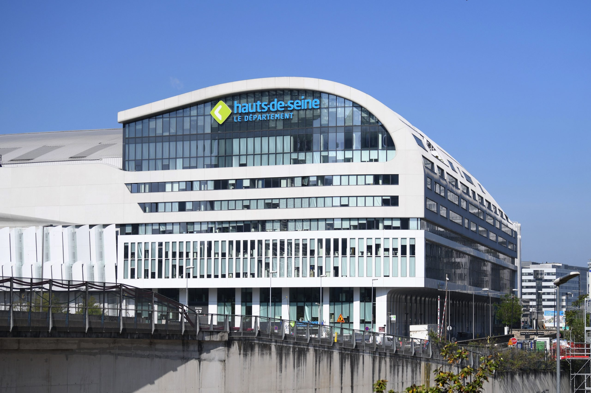
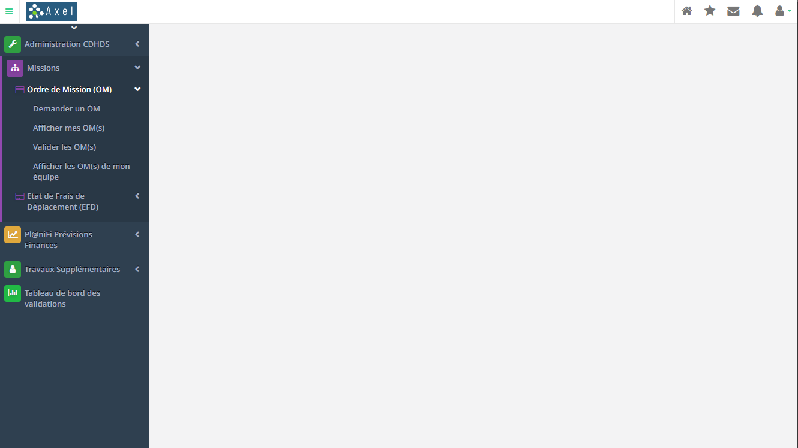
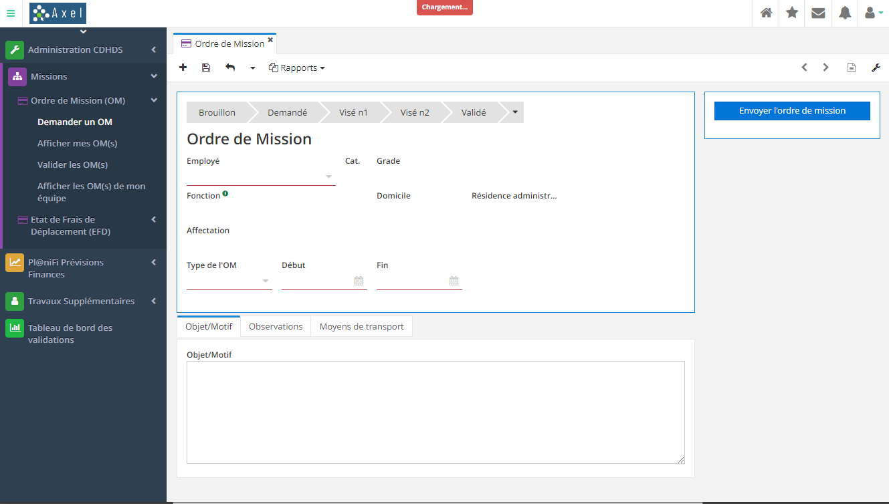
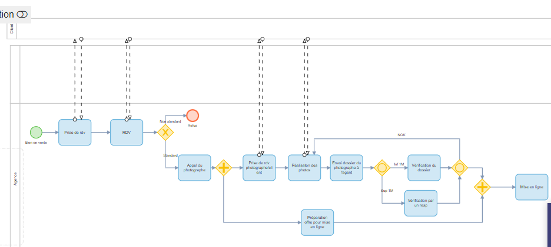

Portfolio Sio
Accueil
Certifications
Projets
CV
Projet AXEL
Objectifs et Missions
Utilisation et configuration d’ERP (Axelor)
Développement en Java et gestion des bases de données (PostgreSQL)
Lecture et traitement de fichiers XML et CSV
Gestion de projet et communication avec les équipes
Rédaction de documentations techniques
Chef de l'équipe :
Ophelie Ramon
Tuteur :
Fréderic Muraour

Achitecture de l'applications

Page des Ordres de Missions

Processus BPM des Ordres de Missions

Voir le rapport de stage
×